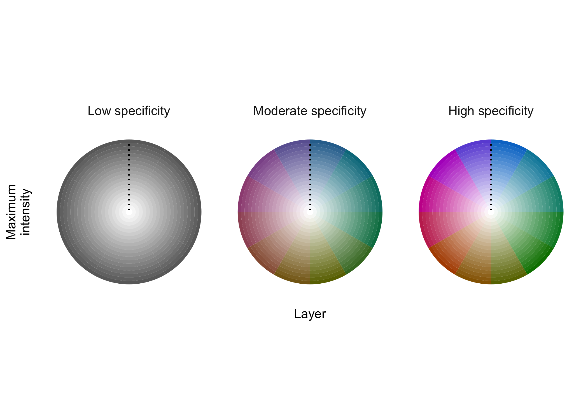

Maps are essential tools for communicating information about wildlife distributions in space and time. Visualizing patterns of stasis and change can be a challenge, however, especially when distributions exhibit different degrees of spatial-temporal overlap. The typical strategy of layering distributional information from different time periods in a single map often results in occluded or muddied data, depending on how layers are combined. colorist is designed to address this challenge by providing multiple approaches to coloring and visualizing wildlife distributions in space-time using raster data. In addition to enabling simultaneous display of a series of distributions through the use of small multiples, colorist provides functions for extracting several features of interest from a set of distributions and for visualizing those features using HCL (hue-chroma-luminance) color palettes. The resulting maps allow for “fair” visual comparison of intensity values (e.g., occurrence, abundance, or density values) across space and time and can be used to address questions about where, when, and how consistently a species, individual, or group is likely to be found.
Installation
You can install the development version of colorist from GitHub with:
# install.packages("remotes")
remotes::install_github("mstrimas/colorist")Background
The proliferation of tracking data and observations of wildlife populations have enabled remarkable growth in our understanding of how animals move through space and time. The goal of colorist is to help researchers explore and communicate this information by giving them tools to color wildlife distributions in space and time. colorist contains functions to summarize three distributional features of interest across a set of raster distributions: 1) maximum intensity (i.e., the maximum occurrence, abundance, or density value), 2) layer of maximum intensity (i.e., the identity of the layer containing the maximum intensity value), and 3) specificity of the maximum intensity value to the layer of maximum intensity (i.e., the degree to which intensity values are unevenly distributed across layers). Each of these metrics can be mapped to HCL (hue-chroma-luminance) colors in specific ways to ensure that data extracted from different raster layers have approximately equal perceptual weights in subsequent map visualizations.
Usage
colorist works on raster data stored as RasterStack objects. Individual raster layers might represent an ordered temporal sequence of species distributions or utilization distributions. Alternatively, raster layers might represent an unordered set of distributions for multiple species, or individuals, within a single time period. Whatever temporal or identity relationships exist within the stack, all raster layers should contain values in the same units (e.g., abundance, occurrence, or probability density) to ensure that they can be meaningfully compared. The basic workflow for colorist is as follows:
- Metrics: Users calculate metrics to describe their distributions.
- Color palette: Users choose colors to describe distributions.
- Map: Users map distributions in a series of small multiples or in a single map.
- Legend: Users generate a legend to accompany their map.
We can demonstrate this workflow using an example dataset of monthly Field Sparrow occurrence probability estimates from eBird Status & Trends.
library(colorist)
# load example data, field sparrow occurrence probability
data("fiespa_occ")
# calculate distribution metrics
r <- metrics_distill(fiespa_occ)
#> class : RasterStack
#> dimensions : 193, 225, 43425, 12 (nrow, ncol, ncell, nlayers)
#> resolution : 14814.03, 14814.04 (x, y)
#> extent : -1482551, 1850606, -1453281, 1405830 (xmin, xmax, ymin, ymax)
#> crs : +proj=laea +lat_0=38.7476367322638 +lon_0=-90.2379515912106 +x_0=0 +y_0=0 +datum=WGS84 +units=m +no_defs +ellps=WGS84 +towgs84=0,0,0
#> names : jan, feb, mar, apr, may, jun, jul, aug, sep, oct, nov, dec
#> min values : 0, 0, 0, 0, 0, 0, 0, 0, 0, 0, 0, 0
#> max values : 0.8538026, 0.8272926, 0.7993844, 0.7805922, 0.7799550, 0.7745436, 0.7626938, 0.7867995, 0.7790458, 0.7896419, 0.8158410, 0.8681034
# generate hcl color palette
pal <- palette_timecycle(fiespa_occ)
# map
map_single(r, pal)
# legend
legend_timecycle(pal)